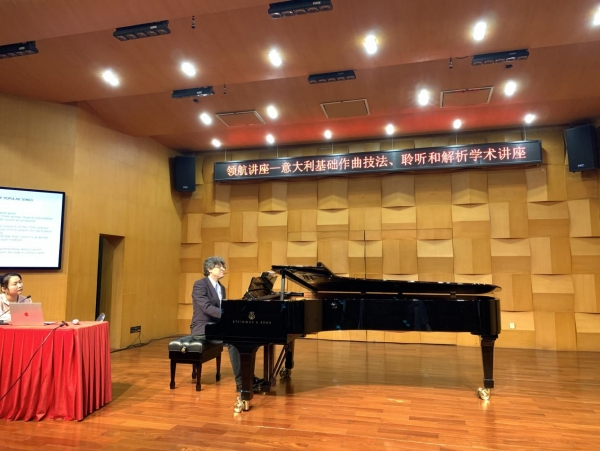
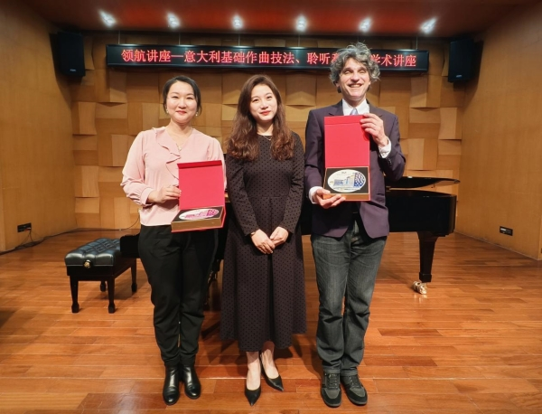
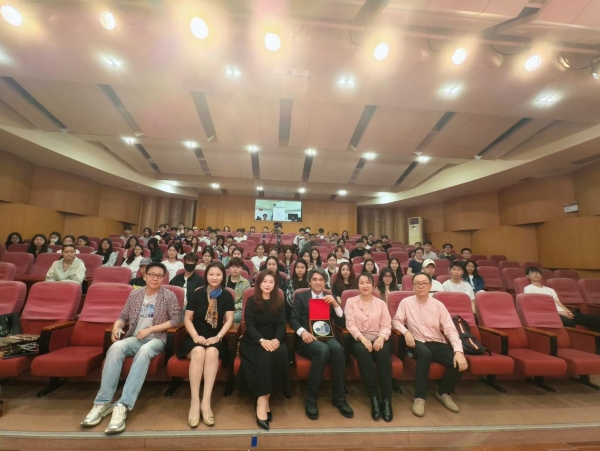

<td align="center" class="tbcolor10" colspan="2" valign="top">
<table border="0" cellpadding="0" height="100%" width="100%">
<tbody><tr><td align="right" height="35px" style="font-size:9pt">
<a href="javascript:window.close()" title="关闭本窗口">关闭窗口</a>｜<a href="print.asp?id=543251" target="_blank" title="打印本页内容">打印张贴版</a>    

</td></tr>
<tr>
<td align="center" height="500" valign="top">
<table border="0" cellpadding="4" cellspacing="0" height="100%" style="border-collapse: collapse;word-break:break-all;" width="86%">
<tbody><tr>
<td align="center" height="80px"><span style="font-family:方正小标宋简体;font-size: 25px;color: #C70E5C">深圳大学艺术学部领航讲座：意大利作曲教授卢卡·泰萨德莱利解析基础作曲技法、聆听和解析学术讲座成功举办</span></td>
</tr>
<tr>
<td align="center" height="50px" style="font-size: 9pt"><font color="#808080">艺术学部　2025/3/18 14:31:00</font><br/> 
<font color="#F8F8F8" style="font-size:9pt">（钟沛基 2022280095）</font></td>
</tr>
<tr>
<td height="300" valign="top">
<p>　 　2025年3月14日上午，由深圳大学艺术学部主办的“领航讲座——意大利基础作曲技法、聆听与解析”学术讲座在汇德楼音乐厅圆满落幕。这场讲座特邀意大利著名作曲家、指挥家及教育家，意大利帕尔玛音乐学院作曲系、指挥系教授卢卡·泰萨德莱利（Luca Tessadrelli）担任主讲嘉宾，与校内外师生、音乐学者及爱好者共同探索意大利音乐创作的深邃魅力。<br/>　 　卢卡·泰萨德莱利教授的音乐作品融合了古典传统与现代先锋性，他深耕巴洛克至21世纪作曲技法的传承与创新，音乐中既呈现出蒙特威尔第（Claudio Monteverdi）式的自然古朴，又有着意大利巅峰歌剧时期对于旋律控制的高超技术。卢卡·泰萨德莱利教授对卢西亚诺·贝里奥（Luciano Berio）的音乐研究非常系统且具有建树性，将贝里奥的“新人声主义”和民歌旋律的现代化变形等手法运用到自己的音乐创作当中，在保留意大利音乐传统基因的同时，赋予作品鲜明的当代特质。</p><p align="center"><br/>图一：卢卡·泰萨德莱利教授正在演奏贝里奥作品中的民歌旋律<br/></p><p align="left">　 　卢卡·泰萨德莱利教授以自身创作为例，深入剖析了音乐中音高组织的多重维度。他提出：“音高不仅是旋律的骨架，更是文化基因的载体。”他巧妙地将纯四度与大二度结合创作出具有五声味道的旋律线条。他常将五声音阶嵌入到大小调体系或全音阶中，实现调式色彩的瞬时切换，消解传统调性边界。</p><p align="center"><br/>图二：王璐璐常务副院长为卢卡教授夫妇送上深圳大学纪念品<br/></p><p>　 　卢卡·泰萨德莱利教授的音乐创作扎根于意大利歌唱性传统中，以调性结构为根基，强调呼吸、律动等人性化情感表达。他受贝里奥“新人声主义”启发，将人声器乐化技法融入创作——通过气声、花唱式等技巧探索音色可能性，但并不颠覆传统内核。作品中精密控制的节奏间隙与节奏速率变化，既延续了意大利歌剧的抒情特质，又赋予现代音乐的先锋质感，使听众在音符之间触摸到传统与创新的共生脉络。<br/>  　 　讲座尾声，卢卡教授的夫人、女高音歌唱家吴越登台演绎其声乐作品《猫》，将讲座推向艺术高潮。该作品以“新人声主义”为核心，通过喉部共鸣、跳音装饰、气声技法来模拟猫的叫声。吴越的演唱精准驾驭了从极弱气声到爆发性嘶吼的动态对比，以半音滑奏衔接意大利语爆破辅音，将猫科动物的神秘与躁动转化为声带振动的物理诗学。这场表演不仅实证了卢卡教授“调性框架内的先锋实验”理念，更以具象化的音乐语言，为现代声乐创作提供了技术范本。</p><p align="center"></p><p align="center">图三：讲座合影</p><p align="center"><br/></p><p align="right">艺术学部音乐舞蹈学院</p><p align="right">2025年3月18日<br/></p><link href="/szu.css" rel="stylesheet" type="text/css"/><link href="/szu.css" rel="stylesheet" type="text/css"/></td>
</tr>
<tr><td height="0" style="font-size: 9pt"></td></tr>
<tr><td align="right" style="font-size: 9pt">撰稿：刘丽琳　审核：音乐舞蹈学院  <br/>（更新于2025/3/18 14:48:00）<br/> </td></tr>
</tbody></table>
</td>
</tr>
</tbody></table>
</td>
